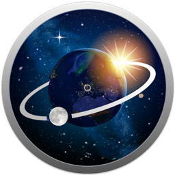
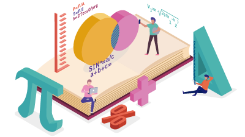

OrionDelta
Menu
Inicio
Eventos
Video Cursos
Postcast
Blog
Misión Visión
Grupo de Astronomía
OrionDelta
. Divulgación cientifica desde el Caribe Colombiano
Conoce más
Astronimía
Una mirada al Cosmos

Estudiemos los cuerpos celestes del universo
Grupo de Estudio
Matemáticas
Aplicación práctica

Pongamos en practica la teoría para aprender mejor
Grupo de Estudio
Tecnología
Avances tecnológicos e informáticos
Aprendamos a progamar y a automatizar nuestra vida
Grupo de Estudio
Arte
Habilidades artísticas a flor de piel
Hagamos hermoso el conocimiento
Grupo de Estudio
Cuando se conjugan las habilidades artísticas y creativas, se ponen en valor aspectos como la
innovación
y el diseño, el desarrollo de la curiosidad y la
imaginación
, la búsqueda de soluciones diversas a un único problema